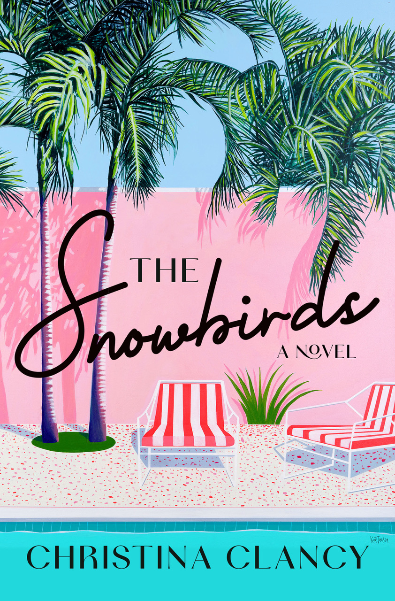

Christina Clancy has crafted a number of bestselling novels, including The Second Home, Shoulder Season and, most recently, The Snowbirds. As she notes on her website, “My novels feature restless people trying to figure out how—and where—they can feel at home in this world.” She is about to start her second full residency at Ragdale in Lake Forest, where she has also led workshops. She lives with her husband in Chicago.
How did you come up with the idea for The Snowbirds?
I was fascinated by the story of one of the members of our condo community in Palm Springs who went hiking with his friend and was rescued after he went missing in the San Jacinto mountains for three days. You’d think that his adventure would be the most interesting part of the story, but I was even more fascinated by what it must have been like for his wife to wait for news of his well-being. How did she cope with the uncertainty and fear? Who did she talk to? What did she eat? What was it like to try to sleep each night? I figured that time would involve a lot of intense reflection about the good and bad of their long relationship.
I also wanted to write about Palm Springs because I spend so much time there, and it’s a nice mental escape during the cold winter months.

What book have you enjoyed researching the most and why?
I’d have to say Shoulder Season, my novel set mostly in 1981 at the former Playboy resort in Lake Geneva, Wis. It didn’t start out as a book about Playboy, but the more I learned about the strange “wholesome” resort and the pressure imposed on the women (most of whom were from small towns in the area) to meet the expectations of both the men who read the magazine and the locals, the more I felt compelled to capture the history of the place before it was forgotten.
I wrote Shoulder Season during the pandemic, a time made a lot less lonely and more fun because I was interviewing retired bunnies (“rabbits”) who had incredible stories and fond memories of the resort. I had a lot of complicated thoughts about Playboy going into the book, but it was inspiring to learn that the experience of working there could be both demeaning and empowering. Every woman I talked to waxed nostalgic about their time there.
How important has living in Wisconsin been to creating your fiction?
Joan Didion has this great line: “You have to pick the places you don’t walk away from.” For me, that place is Wisconsin. When I was working on my debut, The Second Home, I was having a hard time getting to know my characters, who were from Evanston. A writer friend suggested that I set them in Milwaukee instead, because the city is so interesting and well known to me, which seemed like a radical suggestion at the time. I gave it a try, and the Gordon family snapped to life the minute they took residence on Milwaukee’s East Side.
I’ve carried that lesson into my other books, setting them in places I know well. My novels are character-driven, and our personalities are hugely influenced by the places that shape us. I have characters from Milwaukee, East Troy, and Madison, and each of those places are very different even though they are in Wisconsin.
How did you first become interested in writing?
My grandfather, Warren Seyfert, was the former headmaster of Chicago Lab School, so you can imagine that I grew up surrounded by books. When we visited my grandparents in Cape Cod, where they retired, we’d go to the library with big brown bags and check out as many books as the librarian would let us take home. I had reading competitions with my sisters and carried books everywhere.
One day I was in the library and wanted to read a very specific kind of book, and it occurred to me that I’d have to write it. It was a radical awareness that I had the power to put words on the page.
What does your writing day look like?
I try to generate new work in the mornings when I have the most clarity and feel the most creative. Editing is something I can do at any time of day. I love to edit! Honestly, I’m a pretty hyper person, so it’s difficult to park myself in front of the computer for extended periods of time. But when the magic starts to happen and I get lost in a story or obsessed with perfecting a sentence, it’s worth it.
What do you find most challenging as a writer?
I have a hard time writing about people who are deceptive or manipulative. I’m a middle child and a mom, and I find myself wanting everyone to behave. I have to fight the impulse to protect my characters.
Why did you decide to go to Ragdale?
I heard about Ragdale from a writing friend many years ago when my kids were little, and it sounded so extravagant and rarified, way beyond anything I could dare to dream to be part of. I finally applied in 2016 and couldn’t believe I was accepted since I’d only published a few short stories and essays at the time. I decided to go because I wanted to see how much I could accomplish without domestic, personal, and teaching obligations (I was a professor at Beloit College at the time).
How did Ragdale help foster your writing and editing skills?
During my first retreat, I was working on a novel I couldn’t get off the ground, so I decided to try to adapt a short story I’d written into a play, something I’d never done before. The play was terrible, but I learned so much about adaptation and playwriting in the process, and I apply those lessons into everything I write.
I often imagine my scenes taking place on a stage because it forces me to imagine the setting, put characters in conflict, and focus on how dialogue doesn’t involve call and receive, but competing agendas. Characters can’t just sit and have a conversation for very long in a play. As puppeteer, I need to make them move and act.
What is one of your favorite stories related to Ragdale?
I stayed in the room at the top of the stairs. My room had a little three-season porch that I wanted to access, but the door was sealed shut for winter (it was January).
One day after a snowstorm I looked at the porch through the window and noticed a set of a man’s footprints in the snow, when it would have been impossible for anyone to access that space. As if that wasn’t enough to convince me there was a ghost, a few years later, when I was leading a retreat at Ragdale for Off Campus Writers Workshop, I stood near the front door of the main house with my friend Tara Maher. We heard a knock at the door as clear as a bell. Since we were standing right there we opened it, but there was nobody there. I was glad I had a witness to the ghostly encounter.
What are you working on next?
I’m working on a novel about mothers and daughters set on an island, but it’s very new and I have a residency at Ragdale in March, so who knows how it will change.
This was first published in Lake Forest Love.